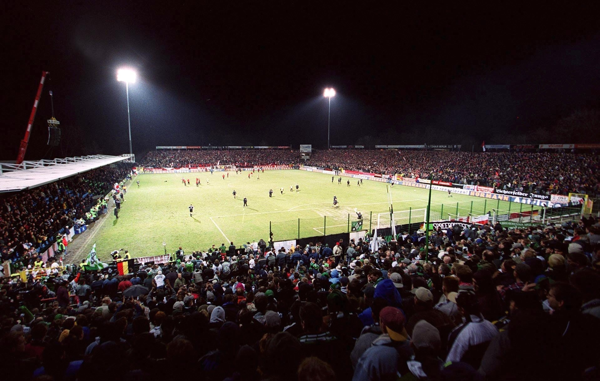
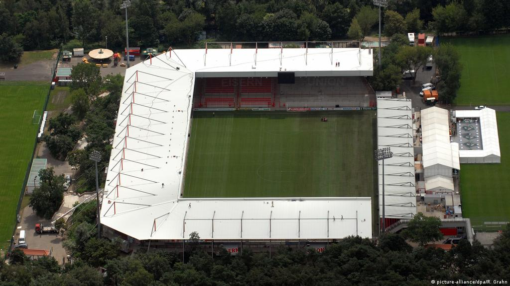

Union Berlin

Nombre completo: 1. FC Union Berlin
Apodo: Die Eisernen (Los Hierros)
Fundacion: 1906
Ciudad: Kopenick, Berlin
Estadio: Alte Försterei
ESTADIO
Nombre: Alte Försterei
Fundacion: 1920
Ciudad: Berlin
Capacidad: 22.012 espectadores

